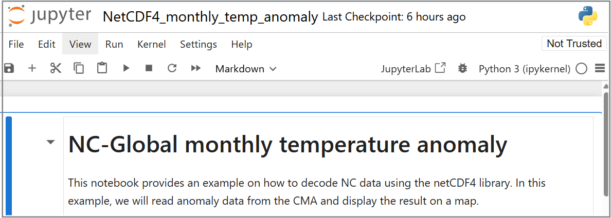

Декодирование данных из бинарных форматов ВМО
Результаты обучения!
К концу этой практической сессии вы сможете:
- запустить контейнер Docker для образа "demo-decode-eccodes-jupyter"
- запустить пример Jupyter-ноутбуков для декодирования данных в форматах GRIB2, NetCDF и BUFR
- узнать о других инструментах для декодирования и визуализации форматов, управляемых таблицами ВМО (TDCF)
Введение
Бинарные форматы ВМО, такие как BUFR и GRIB, широко используются в метеорологическом сообществе для обмена данными наблюдений и моделирования. Для их декодирования и визуализации обычно требуются специализированные инструменты.
После загрузки данных из WIS2 вам часто потребуется декодировать их для дальнейшего использования.
Существуют различные библиотеки кода, которые позволяют писать скрипты или программы для декодирования бинарных форматов ВМО. Также доступны инструменты с пользовательским интерфейсом, которые позволяют декодировать и визуализировать данные без необходимости написания программного обеспечения.
В этой практической сессии мы демонстрируем, как декодировать три разных типа данных с использованием Jupyter-ноутбука:
- GRIB2, содержащий данные для Глобального ансамблевого прогноза, созданного системой CMA Global Regional Assimilation PrEdiction System (GRAPES)
- BUFR, содержащий данные о треках тропических циклонов из системы ансамблевого прогнозирования ECMWF
- NetCDF, содержащий данные о ежемесячных аномалиях температуры
Декодирование загруженных данных в Jupyter-ноутбуке
Чтобы продемонстрировать, как можно декодировать загруженные данные, мы запустим новый контейнер с использованием образа 'decode-bufr-jupyter'.
Этот контейнер запустит сервер Jupyter-ноутбуков на вашей виртуальной машине, который включает библиотеку ecCodes, позволяющую декодировать данные BUFR.
Мы будем использовать пример ноутбуков, находящихся в ~/exercise-materials/notebook-examples, чтобы декодировать загруженные данные о треках циклонов.
Для запуска контейнера используйте следующую команду:
docker run -d --name demo-decode-eccodes-jupyter \
-v ~/wis2box-data/downloads:/root/downloads \
-p 8888:8888 \
-e JUPYTER_TOKEN=dataismagic! \
ghcr.io/wmo-im/wmo-im/demo-decode-eccodes-jupyter:latest
Разберем эту команду:
docker run -d --name demo-decode-eccodes-jupyterзапускает новый контейнер в фоновом режиме (-d) и присваивает ему имяdemo-decode-eccodes-jupyter-v ~/wis2box-data/downloads:/root/downloadsмонтирует каталог~/wis2box-data/downloadsна вашей виртуальной машине в/root/downloadsв контейнере. Здесь хранятся данные, загруженные из WIS2-p 8888:8888отображает порт 8888 на вашей виртуальной машине на порт 8888 в контейнере. Это делает сервер Jupyter-ноутбуков доступным из вашего веб-браузера по адресуhttp://YOUR-HOST:8888-e JUPYTER_TOKEN=dataismagic!задает токен, необходимый для доступа к серверу Jupyter-ноутбуков. Этот токен потребуется при доступе к серверу через веб-браузерghrc.io/wmo-im/demo-decode-eccodes-jupyter:latestуказывает образ, используемый контейнером, который уже включает пример Jupyter-ноутбуков, используемых в следующих упражнениях
О контейнере demo-decode-eccodes-jupyter
Образ demo-decode-eccodes-jupyter был разработан для этого обучения и использует базовый образ с библиотекой ecCodes, а также сервер Jupyter-ноутбуков и Python-пакеты для анализа и визуализации данных.
Исходный код этого образа, включая пример ноутбуков, можно найти в репозитории wmo-im/demo-decode-eccodes-jupyter.
После запуска контейнера вы можете получить доступ к серверу Jupyter-ноутбуков на вашей виртуальной машине, перейдя по адресу http://YOUR-HOST:8888 в веб-браузере.
Вы увидите экран с запросом "Password or token".
Введите токен dataismagic!, чтобы войти в сервер Jupyter-ноутбуков (если вы не использовали другой токен в команде выше).
После входа вы увидите следующий экран с перечнем каталогов в контейнере:

Дважды щелкните на каталоге example-notebooks, чтобы открыть его. Вы увидите следующий экран с перечнем примерных ноутбуков:

Теперь вы можете открыть примерные ноутбуки для декодирования загруженных данных.
Пример декодирования GRIB2: данные GEPS от CMA GRAPES
Откройте файл GRIB2_CMA_global_ensemble_prediction.ipynb в каталоге example-notebooks:

Прочитайте инструкции в ноутбуке и выполните ячейки для декодирования загруженных данных для глобального ансамблевого прогноза. Выполняйте каждую ячейку, щелкая на ней и нажимая кнопку запуска на панели инструментов или нажимая Shift+Enter.
После выполнения всех ячеек вы должны увидеть визуализацию "Вероятность аномалии температуры на уровне 850 гПа ниже -1,5 стандартных отклонений":

Question
Как можно обновить визуализацию в этом ноутбуке, чтобы отобразить одно из других сообщений в файле GRIB2?
Нажмите, чтобы увидеть ответ
В последней ячейке ноутбука вы увидите следующий код:
# show visualization for message number 8 (Probability of 850hPa temperature anomaly below -1.5 standard deviations)
show_map_visualization(grib_file, 8)
Вы можете изменить эту строку или добавить другую строку, чтобы визуализировать одно из других сообщений в файле GRIB2, изменив номер сообщения:
# show visualization for message number 9
show_map_visualization(grib_file, 9)
Затем выполните ячейки в ноутбуке заново, чтобы увидеть обновленный график.
Пример декодирования BUFR: треки тропических циклонов
Откройте файл BUFR_tropical_cyclone_track.ipynb в каталоге example-notebooks:

Прочитайте инструкции в ноутбуке и выполните ячейки для декодирования загруженных данных о треках тропических циклонов. Выполняйте каждую ячейку, щелкая на ней и нажимая кнопку запуска на панели инструментов или нажимая Shift+Enter.
В конце вы должны увидеть график вероятности трека тропического циклона:

Question
Результат отображает предсказанную вероятность трека тропического циклона в пределах 200 км. Как можно обновить ноутбук, чтобы отобразить вероятность трека в пределах 300 км?
Нажмите, чтобы увидеть ответ
Чтобы обновить ноутбук для отображения вероятности трека тропического циклона в пределах другого расстояния, вы можете обновить переменную distance_threshold в блоке кода, который рассчитывает вероятность удара.
Чтобы отобразить вероятность трека тропического циклона в пределах 300 км:
# set distance threshold (meters)
distance_threshold = 300000 # 300 км в метрах
Затем выполните ячейки в ноутбуке заново, чтобы увидеть обновленный график.
Декодирование данных BUFR
Упражнение, которое вы только что выполнили, предоставило конкретный пример того, как можно декодировать данные BUFR с использованием библиотеки ecCodes. Разные типы данных могут требовать различных шагов декодирования, и вам может потребоваться обратиться к документации для типа данных, с которым вы работаете.
Для получения дополнительной информации обратитесь к документации ecCodes.
Пример декодирования NetCDF: ежемесячные аномалии температуры
Откройте файл NetCDF4_monthly_temperature_anomaly.ipynb в каталоге example-notebooks:

Прочитайте инструкции в ноутбуке и выполните ячейки для декодирования загруженных данных об ежемесячных аномалиях температуры. Выполняйте каждую ячейку, щелкая на ней и нажимая кнопку запуска на панели инструментов или нажимая Shift+Enter.
В конце вы должны увидеть карту аномалий температуры:

Декодирование данных NetCDF
Формат NetCDF является гибким. В этом примере он содержит значения для переменной 'anomaly', представленные вдоль измерений 'lat' и 'lon'. Разные наборы данных NetCDF могут использовать разные имена переменных и измерений.
Использование других инструментов для просмотра и декодирования бинарных форматов ВМО
Примерные ноутбуки продемонстрировали, как можно декодировать широко используемые бинарные форматы ВМО с использованием Python.
Вы также можете использовать другие инструменты для декодирования и визуализации форматов, управляемых таблицами ВМО, без необходимости написания программного обеспечения, такие как:
- Panoply — кроссплатформенное приложение для построения графиков геопривязанных и других массивов из форматов NetCDF, HDF, GRIB и других наборов данных
- ECMWF Metview — метеорологическое приложение для анализа и визуализации данных, поддерживающее форматы GRIB и BUFR
- Integrated Data Viewer (IDV) — бесплатная программная платформа на базе Java для анализа и визуализации данных геонаук, включая поддержку форматов GRIB и NetCDF
Заключение
Поздравляем!
В этой практической сессии вы научились:
- запускать контейнер Docker для образа "demo-decode-eccodes-jupyter"
- запускать примерные Jupyter-ноутбуки для декодирования данных в форматах GRIB2, NetCDF и BUFR